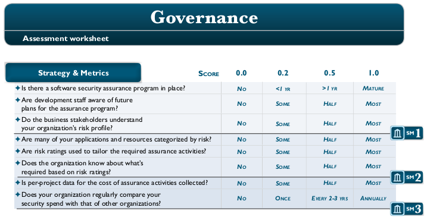
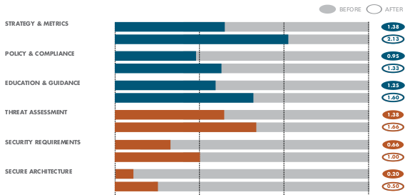
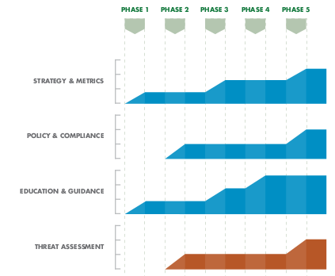

Sichere Softwareentwicklung
~# whoami
Daniel Keyhani (tty)
Infosec Consultant @ Crucible IT Consulting
Consulting, Pentests and Training
OSCP etc.
~# cat .plan
- Einführung
- SSDLC
- DevSecOps
- Vorgehensmodelle
Was interessiert mich Softwaresicherheit?
- Software ist aus allen Bereichen des Lebens nicht mehr wegzudenken
- Immer mehr immer komplexere und vernetztere Software verarbeitet immer mehr Daten
- Verizon DBIR 2019: mehr als 60% aller Angriffe über Webapplikationen
Aber wie bekommt man Software "sicher"?
Einfach immer alles richtig machen!
Neue Idee: Pentest!
1,337 Findings, davon 42 kritisch... und nun?
Pentests...
... kosten viel Zeit und Geld.
... finden nie alle Probleme.
... entdecken Probleme erst (zu) spät.
... sind trotzdem besser als nichts.
Neue Idee:
Einfach meistens vieles besser machen!
Einfach immer alles richtig machen!
Secure Software Development Lifecycle
Planung
- Projektinhalt und -ziel festlegen
- Machbarkeit evaluieren
- Projektrisiken identifizieren
- Personal- und Zeitplanung
Analyse
- Anforderungen erfassen
- Prozesse modellieren
- Subjekte und Objekte festlegen
Design
- Architektur und Technologien
- Entwurfsmuster und Komponenten
- Spikes und Prototypen
- APIs und andere IO
Code
- Implementation von Komponenten
- Integration zu Gesamtsystem
- Modul- und Integrationstests?
- Regressionstests?
Test
- Funktionale Vollständigkeit
- Korrektheit
- Automatisierte und/oder manuelle Tests
Betrieb
- Deployment
- Maintenance
- Stilllegung
- DevOps?
Prozessmodelle
- Scrum
- Extreme Programming
- V-Modell XT
- Kanban
- Proprietärer Prozess
Voraussetzungen
- Prozess ist spezifiziert
- Prozess wird befolgt
Aber wie wird der Entwicklungsprozess "secure"?
Just add Security!
- Security-Aktivitäten zu Prozess hinzufügen
- Probleme früh im Prozess erkennen
- Aktivitäten bauen auf einander auf
Planung
- Sicherheitsrisiken erkennen und abschätzen
- Einordnung in Gesamtrisikokonzept
- Securitykompetenzen im Team sicherstellen
- Zusätzliches Training oder Personal?
Analyse
- Sicherheitsanforderungen erfassen
- Sicherheitskategorien für Daten festlegen
- Prozessrisiken erkennen
- Berechtigungen/Zugriff festlegen
- Akzeptanzkriterien festlegen
Design
- Sicherheitsanforderungen berücksichtigen
- Angriffsfläche analysieren und reduzieren
- Threat Model erstellen und auswerten
- Architekturreview
- Guidelines
Code
- Standardkomponenten verwenden
- Sauberer und lesbarer Code
- Guidelines
- Code Review (Checklisten!)
- Tooling (SAST etc.)
Test
- Automatisierte Security-Tests
- SAST, IAST, DAST
- Dependency Checks
- Pentesting - auch nach Deployment
- Fuzzing
Betrieb
- Sicheres Deployment
- Patchkonzept
- Incident Response
- DevSecOps?
Übergreifende Aktivitäten
- Strategie
- Training
- Metriken
- Bereitstellen von Materialien
Grundsätze
- Prozess ist dokumentiert
- Prozess wird gelebt
- Guidelines, Checklisten, Vorlagen
- Hilfe für Entwickler, keine Gängelung
- Management- und Entwickler-Buy-In essentiell
... und wenn man sonst nichts tut...
DevOps - Herausforderungen
- Kurze Zyklen, hohe Geschwindigkeit
Move fast and break things
- Klassische Security bremst
- Mangelndes Verständnis für Dev-Prozesse bei Security-Team
- Risiken in Pipeline
DevOps - Chancen
- Klassischer Pentest als "Gate" unmöglich
- Hoher Automatisierungsgrad
- Prozess ist wichtig
- Teamarbeit, Knowledge Sharing
- Kurze Feedbackzyklen
DevOps - Lösungen
- Shift security left (SSDLC)
- Security-Tooling und Automatisierung
- Enge Integration mit Dev und Ops (DevSecOps)
- Monitoring und "Red Teaming"
- Aus Erfahrung lernen (PDCA)
Sicherer Entwicklungsprozess fällt nicht vom Himmel... was tun?
"Fertige" Modelle
- Microsoft SDL
- Secure Scrum
- OWASP SAMM
- BSIMM
Microsoft SDL
- Präskriptives Modell
- 12 Praktiken
- Ursprünglich eher Wasserfall
- Seit 2002 entwickelt und verbessert
- Seit 2004 bei Microsoft verpflichtend
Microsoft SDL - Praktiken
- Training
- Security Requirements
- Metrics and Reporting
- Threat Modeling
- Design Requirements
- Cryptography Standards
- Manage Third-Party Risk
- Approved Tools
- Static Analysis (SAST)
- Dynamic Analysis (DAST)
- Penetration Testing
- Incident Response Process
Microsoft SDL - Maturity Model
- Wie gut ist meine SDL-Implementation?
- Guides zur Implementierung
- Maturity Level "messen"
Secure Scrum
- Modifikation von Standard-Scrum
- IT Security Research Group München
- Zusätzliche Aktivitäten
- Mapping auf Scrum-Aktivitäten
OWASP SAMM
- OWASP Software Assurance Maturity Model
- Präskriptives Modell
- Offener Erstellungsprozess
- Vier Geschäftsfunktionen
- 12 Praktiken
- Version 2.0: 15 Praktiken
BSIMM
- Building Security In Maturity Model
- Deskriptives Modell
- Basiert auf Erhebungen zu existierenden Sicherheitsprogrammen
- Ursprünglich Untersuchung von Cigital/Synopsys
- Mittlerweile Beteiligung von 122 Firmen
- Geeignet vor allem für Evaluation
OWASP SAMM
- 12 Praktiken
- Jede Praktik hat drei Reifegrade
- Zwei Aktivitäten pro Reifegrad
- Scoring der Aktivitäten
- Metriken
OWASP SAMM
- Umfangreiche Beschreibung von Aktivitäten
- Tools und Worksheets
- How To-Dokument
- Quick Start Guide
OWASP SAMM - Einstieg
- Initiales Assessment durchführen
- Roadmap auswählen oder erstellen
- Iterative Verbesserung planen
- Umsetzen, Messen, Anpassen (PDCA)
- Iterieren
OWASP SAMM - Assessment
Assessment Worksheets mit Fragen

OWASP SAMM - Assessment
Scorecard erstellen

OWASP SAMM - Roadmap
Roadmap-Templates

OWASP SAMM - Roadmap
- Roadmap-Template nach Unternehmenstyp wählen
- Roadmap anpassen
- Was bringt am meisten?
- Was ist für planvolles Vorgehen nötig?
OWASP SAMM - Planen
- Zielvorgaben für Phase aus Roadmap ablesen
- Aktivitäten auswählen
- Maßnahmen zur Implementation planen
- Personen, Dokumente, Prozesse
- Kontrollmechansimen einplanen
FILL TEXT
FILL TEXT
FILL TEXT
FILL TEXT
Fertig - alles ist sicher!
Referenzen
- https://www.microsoft.com/en-us/securityengineering/
- https://owaspsamm.org/
- https://www.bsimm.com/
- https://cheatsheetseries.owasp.org/
Vielen Dank für die Aufmerksamkeit.
Fragen?